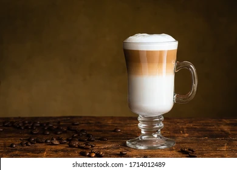
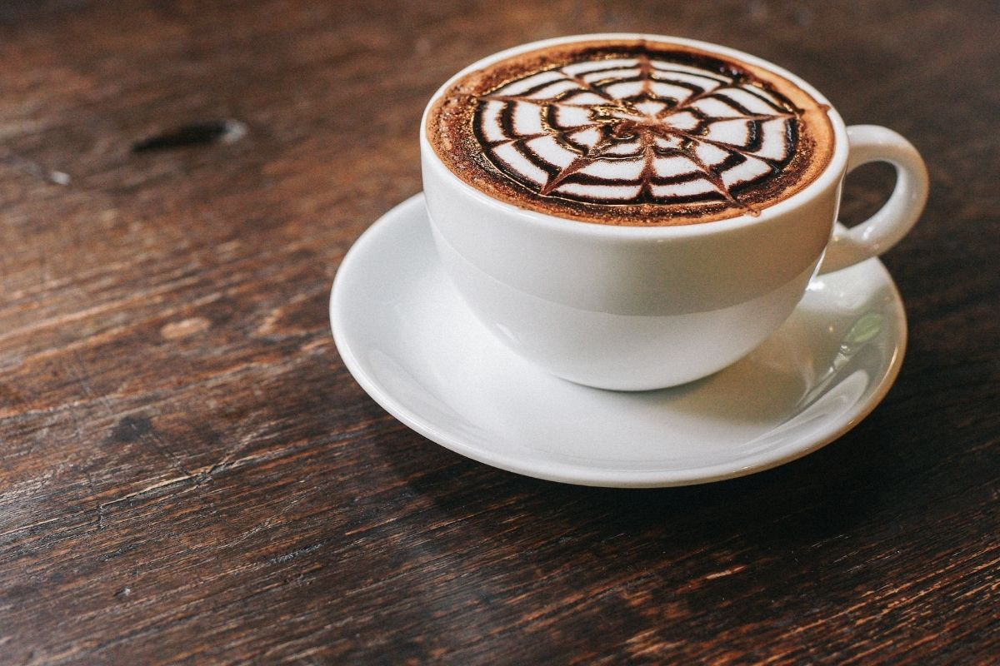
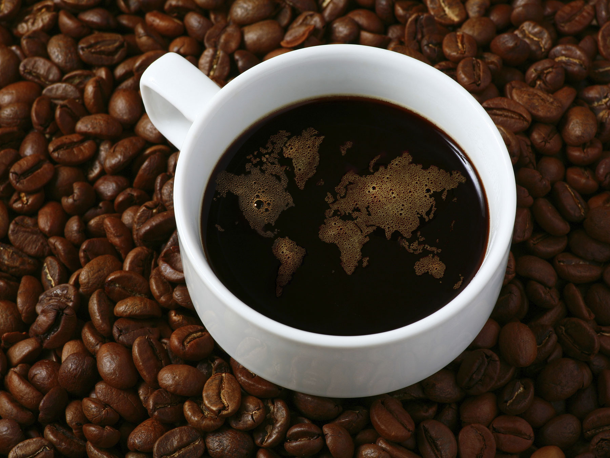

Cappuccino
A cappuccino is an espresso-based coffee drink that originated in Austria with later development taking place in Italy, and is prepared with steamed milk .
Espresso

Espresso is a coffee-brewing method of Italian origin, in which a small amount of nearly boiling water (about 90 °C or 190 °F) is forced under 9–10 bars
Macchiato

Macchiato is an Italian word meaning 'marked' or 'stained', and may refer to: Caffè macchiato AKA espresso macchiato, espresso coffee with a little milk .
Latte

Caffè latte often shortened to just latte in English, is a coffee beverage of Italian origin made with espresso and steamed milk.
Mocha

A caffè mocha also called mocaccino is a chocolate-flavoured warm beverage that is a variant of a café latte commonly served in a glass rather than a mug.
Iced Mocha

Our rich, full-bodied espresso combined with bittersweet mocha sauce, milk and ice, then topped with sweetened whipped cream. The classic iced coffee drink
Arabica coffee

Coffea arabica also known as the Arabic coffee, is a species of flowering plant in the coffee and madder family Rubiaceae.
Americano

Caffè Americanois a type of coffee drink prepared by diluting an espresso with hot water, giving it a similar strength to, but different flavor from, traditionally brewed coffee.